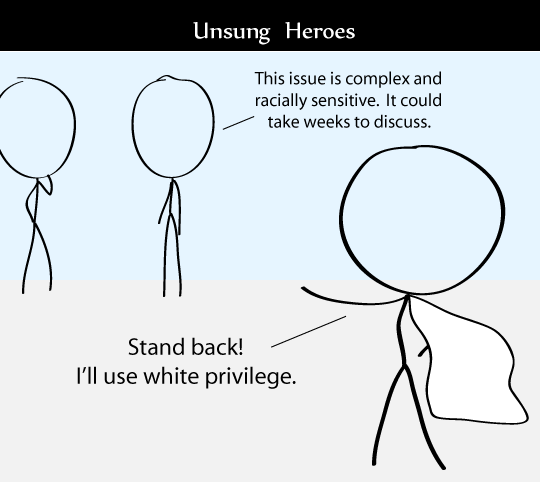

Comic JK 704
When I Feel Like It
⇤
<
?
>
⇥

⇤
<
?
>
⇥
Forum
.
RSS
.
Digg
.
Facebook
.
Reddit
.
Twitter
.
Stumbleupon
Enter your thoughts on number 704 here. Please, no spamming, trolling, or phreaking. jlub I sometimes wish they were translucent... I'm going to leverage my white male privilege to get with your mother. It should be easy. I want to get better at programming for the sole purpose of messing with posts in web-comic bulletin boards (or whatever you call this thing) Basically irritating people who share insights and opinions. Would I use C? Or is it just me? >and why do you feel the need to do that... ? would you like it if the readers of said web comics came around and let's say moved all your furniture onto the street every day... ? >>I'm hoping that first post was just a jab at the people who actually DO that. >>>yes, it was a jab. I am surprised this was not erased yet. >>>>Used argument of absurdity. It's super effective. I don't know about writing scripts like that in C. I think you'd be better off with perl or python for that task. A bit of web automation here would be damn funny - both because some no-lifer took the trouble to do it, but also just because it's almost always funny when very simple/insecure websites become the victim of juvenile wannabe hackers. >presumably it's also funny when a passer-by throws a brick through someone's windows, because ordinary glass is also very "simple/insecure"... ? >>lol? >>>LOL indeed I'm the one who wrote the po Wait, so, a racially sensitive topic is solved by a white privilege? SCORE!!!!